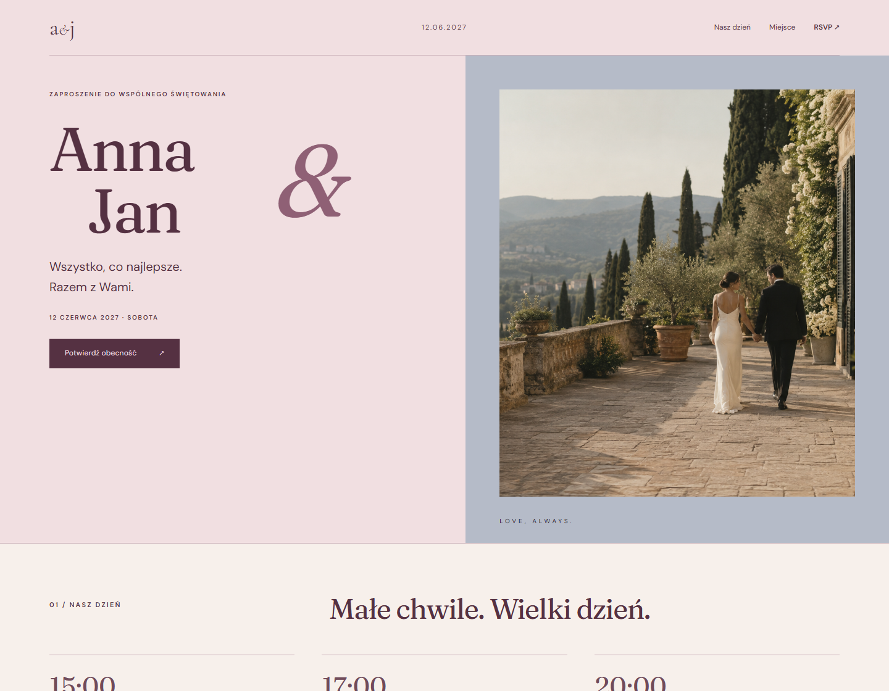

05 A
Aperitivo

Maślana żółć i wino, duża miękka typografia i rytm jak w karcie restauracji. Radosny charakter bez konfetti i przechylonych ramek.
#f5edbf#692d35#e9b29e
Fraunces + DM Sans · Słońce, wino i wspólny stółMaślana żółć i wino, duża miękka typografia i rytm jak w karcie restauracji. Radosny charakter bez konfetti i przechylonych ramek.

Pudrowy róż, śliwka, duży znak „&” i układ z mocnym podziałem koloru. Romantyczny, ale graficzny i uporządkowany.